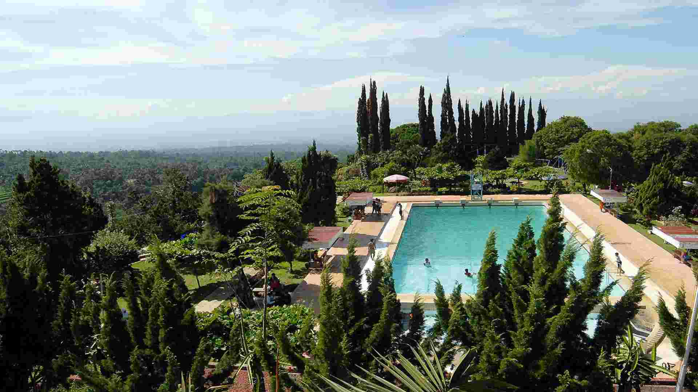

PROFIL GURU

Tentang Saya
Halo, saya mahasiswa Pendidikan Profesi Guru (PPG) Prajabatan. Saya memiliki dedikasi tinggi dalam mengembangkan pembelajaran yang inovatif, interaktif, dan berorientasi pada peserta didik. Selama pelaksanaan PPL Terbimbing, saya berfokus pada penyusunan perangkat pembelajaran berbasis kebutuhan siswa serta pemanfaatan teknologi digital.
Lokasi LPTK
Universitas Negeri Jember
LPTK tempat saya menempuh Program Pendidikan Profesi Guru. Kampus ini menyediakan sarana dan bimbingan akademik untuk menyiapkan pendidik yang profesional dan berkarakter.


Lokasi PPL
SDN Tegal Besar 03 Jember
Sekolah mitra tempat pelaksanaan Praktik Pengalaman Lapangan (PPL). Di sini saya melaksanakan praktik mengajar mandiri, pendampingan ekstrakurikuler, dan interaksi langsung bersama peserta didik.